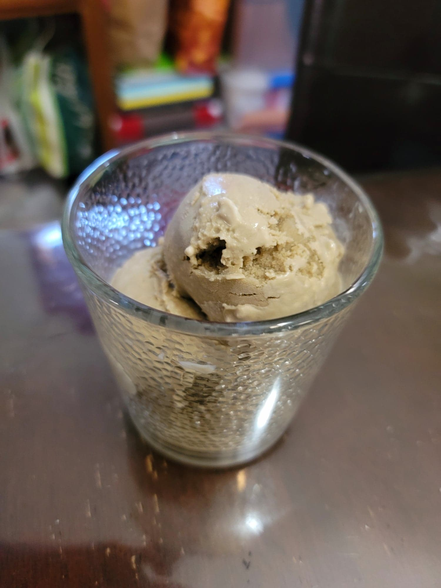

Lemon Balm Ice Cream

Ingredients:
- 1 cup Lemon balm leaves
- 160 g Sugar
- 300 ml Milk
- 600 ml Heavy cream
- 1/4 tsp Salt
- 6 Egg yolks
Instructions:
- Place the lemon balm and sugar into a food processor. Blend until homogenous and the sugar is a vibrant green.
- Add in the lemon balm sugar, milk, heavy cream, and salt to a pot. Heat over medium-low and whisk until the sugar is dissolved.
- Meanwhile whisk together the egg yolks in a separate bowl. Add in roughly 1/3 cup of the heating milk mixture to the eggs while whisking constantly to temper the eggs. Then pour the egg mixture back into the pot while whisking the pot constantly. Whisk constantly while heating the mixture until the mixture reaches 170 degrees Fahrenheit. Then immediately remove from the heat. Cover and let steep for at least 30 minutes or until cooled completely.
- Strain the mixture into a large bowl to remove any solids. Transfer to a fridge to chill completely. Once chilled, pour into an already churning ice cream maker. Let churn for about 40 minutes or until soft serve consistency. Then freeze in the freezer to firm up. Serve frozen.